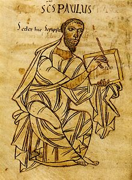

| Апостол Павел Материал из Википедии — свободной энциклопедии |
|  Апостол Павел: из рукописи Посланий Павла начала IX века (Библиотека земли Вюртемберг, Штутгарт, HB II 54). Одно из самых ранних изображений Павла в европейском искусстве. |
Апостол Павел (Савл, Саул, ивр. שאול — Шауль) (предп. 5/15, Тарс — 64/67, Рим) — «апостол
язычников» (Рим.11:13), не входивший в число Двенадцати апостолов и участвовавший в юности в
преследовании христиан. Пережитый Павлом опыт встречи с воскресшим Иисусом Христом привёл к
обращению и стал основанием для апостольской миссии. Павлом были созданы многочисленные
христианские общины на территории Малой Азии и Балканского полуострова. Послания Павла общинам
и отдельным людям составляют значительную часть Нового Завета и являются одними из главных
текстов христианского богословия.
ИсточникиГлавными источниками сведений о жизни и проповеди Павла являются книги Нового Завета: Деяния святых Апостолов и Послания Павла. Аутентичные послания являются первичными источниками, содержащими свидетельство от первого лица и современными исследуемым событиям. Вопрос о том, какие именно из 14 новозаветных посланий, традиционно приписываемых апостолу Павлу, в действительности принадлежат ему, рассмотрен ниже и в статьях, посвящённых отдельным посланиям.Свидетельства Посланий требуют критического подхода. Павел небеспристрастен и непосредственно вовлечён в упоминаемые события, поэтому при чтении Посланий необходимо принимать во внимание его склонность к той или иной интерпретации фактов. Необходимо также, насколько это возможно, учитывать адресата послания и ситуацию, в которой оно было написано, поскольку это влияет на риторику письма и характер возвещения Евангелия (керигмы)[1]. Деяния Апостолов, датируемые большинством исследователей концом 70-х — первой половиной 80-х годов, написаны уже после смерти Павла и являются источником, содержащим сведения из вторых рук. Возможное исключение — так называемые «мы-отрывки» (Деян.16:10-17, 20:5-8, 27:1-16 — все три отрывка относятся к морским путешествиям Павла), в которых автор внезапно начинает повествование от первого лица. Не исключено, что этим он подчёркивает, что был свидетелем описываемых событий; существует даже предположение, что это отрывки из дневника, который Лука или кто-то другой вёл во время путешествия. Достоверность свидетельств книги Деяний существенно повышается, если они находят хотя бы косвенное подтверждение в Посланиях или других источниках (включая упоминание тех или иных реалий у античных авторов, археологические находки и др.). Подробнее о проблемах источников и историчности Деяний см. статью Деяния святых Апостолов[2]. Послания Павла — основной источник сведений о его вере, учении и мировоззрении. Приводимые в Деяниях речи Павла нельзя считать безусловно подлинными[3]. Сопоставление книги Деяний, основным действующим лицом второй половины которой является Савл—Павел, с упоминаниями мест, лиц и путешествий в Посланиях позволяет в некоторой мере реконструировать жизнь Павла, прежде всего во время его миссионерских путешествий (прибл. 46—61 гг.). Существует ряд противоречий между Деяниями и Посланиями; в таких случаях, как правило, предпочтение отдаётся свидетельству Посланий. О Павле несколько раз упоминается в писаниях мужей апостольских[4]. Павел также является действующим лицом или ложным автором ряда новозаветных апокрифов, но ценность этих книг как источников информации об историческом Павле неизмеримо ниже. К числу таких апокрифов относятся Деяния Павла, Псевдо-Клементины, Деяния Петра и Павла, Апокалипсис Павла, апокрифические послания Павла и к Павлу (включая переписку с Сенекой) и др. |
Жизнь
Павел — еврей средиземноморской диаспоры, родившийся в Тарсе[5], главном городе Киликии и одном
из крупнейших центров эллинистической культуры. Еврейское имя Павла — Савл (др.-греч. Σαῦλος,
эллинизированная форма имени Саул, ивр. שאול)[6]. Павел происходил из колена Вениаминова[7],
и, вероятно, был назван в честь принадлежавшего к тому же колену библейского царя Саула.
| ||||||||||||||||||||||||||||||||||||||||||||||||||||||||||||||||||||||||||||||||||||||||||
Убийство СтефанаВпервые Савл упоминается в 7-ой главе Деяний, в сцене избиения камнями первомученика Стефана. Проповедника Стефана привлекли к суду за богохульство представители синагог «эллинистов» (евреев, приехавших в Иерусалим из диаспоры и говоривших на греческом языке), в частности, выходцев из Киликии (Деян 6:9)[21], одним из которых мог быть Савл. В Деяниях описан суд над Стефаном, но непонятно, был ли ему вынесен смертный приговор, или его побила камнями разгневанная толпа, не ставшая дожидаться окончания суда.[22].Причины и характер преследованийГонения, в которых принял участие Павел, были вызваны ранней христианской проповедью, становившейся неприемлемой для ортодоксального иудаизма из-за таких моментов как:* Проповедь распятого Мессии. «...мы проповедуем Христа распятого, для Иудеев соблазн[23]...» (1 Кор 1:23). Такая проповедь воспринималась как богохульство, поскольку распятие было особо позорной казнью, несовместимой с богоизбранностью Мессии, который должен прийти как царь и победитель. В Гал 3:13 Павел цитирует Второзаконие 21:23: «Проклят всяк, висящий на древе»[24]. Для Павла-фарисея было немыслимо видеть в распятом и, следовательно, проклятом преступнике Мессию[25]. * Критика храмового культа. Многие исследователи считают, что уже в это время в среде христиан из «эллинистов», таких, как Стефан, стало проявляться критическое отношение к еврейской сосредоточенности на Иерусалиме и Храме, плохо совместимой с вселенским характером христианского благовестия. В речи Стефана перед Синедрионом, в написании которой Лука мог опираться на источник, довольно точно передающий взгляды «эллинистов», содержатся открытые нападки на Храм. Возможно, именно критика храмового культа и стала основной причиной преследований. В ранних гонениях на христиан можно видеть попытку синагогальных общин, находившихся под всецелым влиянием фарисеев, навести порядок в своей среде путём «дисциплинарного» наказания неортодоксальных взглядов. Именно таким наказанием могли быть упоминаемые Павлом бичевание (5 раз по 40 ударов без одного) и тюремное заключение, которым он подвергся уже став христианином (2 Кор 11:23—24)[26]. Не исключено, что преследования христиан велись в основном в эллинистских общинах[27], членом одной из которых мог быть Савл. Основную роль в преследованиях играли, по всей видимости, фарисеи, но в них могло принять участие и храмовое саддукейское священство. В Деян 9:1—2 фарисей Савл получает от саддукейского первосвященника полномочия привести в Иерусалим для наказания христиан из Дамаска. | ||||||||||||||||||||||||||||||||||||||||||||||||||||||||||||||||||||||||||||||||||||||||||
После обращенияКак повествует книга Деяний, на пути в Дамаск он неожиданным образом услышал неведомый голос "Савл! Савл! Что ты гонишь меня?" и на три дня ослеп (9:8-9). Приведенный в Дамаск, он был исцелен христианином Ананием и крестился (9:17-18). Затем новозаветные сведения о дальнейшей судьбе Павла разнятся. Автор Деяний утверждает, что тот прибыл в Иерусалим, но местные христиане долго не могли принять его. Только заступничество Варнавы примирило Павла с апостолами (9:26-27). Сам же Павел в послании к Галатам сообщает, что он после Дамаска не пошел в Иерусалим, но отправился проповедовать в Аравию, после чего вернулся в Дамаск. И лишь через три года он осмелился встретиться с апостолом Петром (Гал1:17-18). Заручившись поддержкой апостола Петра, Павел останавливается в Антиохии, где его сподвижниками становятся Варнава и Марк (Деян.12:24).Затем Павел 14 лет занимается проповедническим служением в Сирии и Киликии, где он вызывает нарекания со стороны иудео-христиан (фарисейской ереси) за отрицание необходимости обрезания. Споры между сторонниками Павла и его противниками требуют созыва Апостольского собора(Деян.15:1-6). Когда в Антиохию прибывает Петр, то у него с Павлом начинаются прения (Гал 2:11-14). Впоследствии Павел распространяет свою проповедь на Европу, проповедуя на Балканах (Филиппы, Фессалоники, Афины, Коринф) и в Италии. Одним из самых значимых его посланий является Послание к Римлянам, написанное в 58 году в Коринфе и адресованное христианской общине Рима. Апостол Павел стал ревностным проповедником Евангелия в Палестине, Греции, Малой Азии, Италии и других регионах античного мира. Согласно книге Деяний, во время празднования воскресного дня в Троаде апостол Павел воскресил юношу по имени Евтих, который сидел на окне и, заснув, упал вниз с третьего этажа[28][29]. За распространение веры Христовой апостол Павел перенес много страданий и был обезглавлен в Риме при Нероне в 64 году (по другой версии — в 67—68 гг.). На месте его погребения ученики оставили памятный знак, который позволил императору Константину разыскать это место и построить там церковь Сан-Паоло-фуори-ле-Мура. Православные христиане отмечают память Петра и Павла в один день — (12 июля н. ст.), католики 29 июня, как двух наиболее почитаемых апостолов, называемых первоверховными святыми апостолами за особо ревностное служение Господу и распространение веры Христовой. | ||||||||||||||||||||||||||||||||||||||||||||||||||||||||||||||||||||||||||||||||||||||||||
Обнаружение останков апостола ПавлаВ день памяти апостола Павла 29 июня 2009 года, папа римский Бенедикт XVI рассказал, что впервые в истории было проведено научное исследование саркофага, находящегося под алтарем римского храма Сан-Паоло-фуори-ле-Мура. По словам папы, в саркофаге были обнаружены «...мельчайшие фрагменты костей, которые были подвергнуты исследованию с использованием углерода-14 экспертами, не знавшими об их происхождении. Согласно результатам, они принадлежат человеку, жившему между I и II веком». «Это, похоже, подтверждает единодушную и бесспорную традицию, согласно которой речь идет об останках апостола Павла», - заявил понтифик на церемонии по случаю завершения торжеств, связанных с 2000-летием святого Павла. Вскрывать древнюю находку долго не решались. Саркофаг пытались просветить рентгеновскими лучами, но камень оказался слишком толстым. «В саркофаге, никогда ранее не открывавшемся на протяжении веков, было проделано малейшее отверстие для введения зонда, посредством которого были обнаружены следы драгоценной льняной ткани, окрашенной в пурпурный цвет, пластина из чистого золота и ткань голубого цвета с волокнами льна. Было обнаружено присутствие красного ладана, а также белковых и известковых соединений». Понтифик пообещал, что, когда ученые закончат исследования, саркофаг с мощами будет доступен для поклонения верующих. | ||||||||||||||||||||||||||||||||||||||||||||||||||||||||||||||||||||||||||||||||||||||||||
>Послания апостола Павла
|
||||||||||||||||||||||||||||||||||||||||||||||||||||||||||||||||||||||||||||||||||||||||||
Литература* Дэвид Ауни Новый Завет и его литературное окружение. — СПб.: РБО, 2000. — ISBN 5-85524-110-6* Ален Бадью Апостол Павел. Обоснование универсализма. — СПб.: Университетская книга, 1999. — ISBN 5-85133-062-7 * Рудольф Бультман Избранное: Вера и понимание. — М.: РОССПЭН, 2004. — ISBN 5-8243-0493-9 * Джеймс Д. Данн Единство и многообразие в Новом Завете. — М.: ББИ, 1999. — ISBN 5-89647-014-2 * Епископ Кассиан (Безобразов) Христос и первое христианское поколение. — М.: ПСТБИ, 2003. — ISBN 5-7429-0106-2 * И. А. Левинская Деяния Апостолов. Главы I-VIII: Историко-филологический комментарий. — М.: ББИ, 1999. — ISBN 5-89647-033-9 * Брюс М. Мецгер Новый Завет: контекст, формирование, содержание. — М.: ББИ, 2006. — ISBN 5-89647-149-1 * Радостная Весть: Новый Завет в переводе с древнегреческого. Учебное издание с историко-филологическими примечаниями. — М.: РБО, 2006. — ISBN 5-85524-323-0 * Н. Т. Райт Что на самом деле сказал апостол Павел. — М.: ББИ, 2004. — ISBN 5-89647-085-1 * Клеон Л. Роджерс-младший, Клеон Л. Роджерс III Новый лингвистический и экзегетический ключ к греческому тексту Нового Завета. — СПб.: Библия для всех, 2001. — ISBN 5-7454-0545-7 * Толкование Нового Завета: сборник эссе о принципах и методах. — СПб.: Библия для всех, 2004. — ISBN 5-7454-0835-9 * Макрей Дж. Жизнь и учение апостола Павла. — Черкассы.: Коллоквиум, 2009. — ISBN 978-966-8957-13-0 | ||||||||||||||||||||||||||||||||||||||||||||||||||||||||||||||||||||||||||||||||||||||||||
Примечания1. ↑ Данн, стр. 64—66. 2. ↑ Левинская, стр. 13—55. 3. ↑ Краткое резюме точек зрения на авторство приводимых в Деяниях речей дано в Talbert, C.H. 'Again: Paul’s Visits to Jerusalem', Novum Testamentum,, 9, 1967, pp. 26—40 (p. 37). 4. ↑ 1-е Послание Климента 5:5, 47:1; Послания Игнатия к Эфесянам 12:2 и Римлянам 4:3; Послание Поликарпа 3:2 и 9:1. 5. ↑ Известно лишь из Деяний (9:11, 21:39, 22:3). 6. ↑ В Посланиях имя Савл нигде не упоминается. 7. ↑ Рим 11:1, Фил 3:5. 8. ↑ Фил 3:5; Гал 1:14; Деян 23:6, 26:5. 9. ↑ Деян 16:37—38, 22:25—29, 23:27. В Посланиях упоминаний об этом нет. 10. ↑ Доводы против ученичества у Гамалиила, равно как и римского гражданства Павла и ряда других фактов, не находящих подтверждения в Посланиях, приводятся, в частности, в Roetzel, C. Paul: The Man and the Myth, Columbia: University of South Carolina, 1998. В фарисействе времён Павла шли постоянные споры между последователями раввинов Гиллеля и Шаммая. Гамалиил принадлежал к более «мягкой» школе Гиллеля, в то время как рисуемый Деяниями и Посланиями образ Павла-фарисея явно ближе к «суровым» шаммаитам (Райт, стр. 26-37). Это может служить доводом против свидетельства Деяний об учении у Гамалиила или, по крайней мере, говорить о расхождении в убеждениях между Савлом и его учителем. 11. ↑ Например, Рим 4:3—25, Гал 3:8—14 и 2 Кор 3:7—18 можно рассматривать как примеры мидраша. Об использовании в Новом Завете пяти приёмов еврейской экзегезы (таргум, мидраш, пешер, типология и аллегория) см. Данн, стр. 122—32; Толкование Нового Завета, стр. 239—264. 12. ↑ http://sumyhram.narod.ru/zinaida.html 13. ↑ Родным языком большинства евреев диаспоры был греческий. Тем не менее, многие комментаторы трактуют слова Павла о себе как о «Еврее от Евреев» (Фил 3:5) в том смысле, что Павла с детства учили говорить по-еврейски и/или арамейски, так что греческий был для него не родным, а вторым языком (Радостная Весть, стр. 410; Еп. Кассиан, стр. 203; Роджерс, стр. 708; Данн, стр. 295). Об евреях-«эллинистах», говоривших по-гречески, и евреях-«евреях», даже в диаспоре сохранявших в качестве повседневного языка арамейский (или еврейский), см. раздел Участие в преследовании христиан. 14. ↑ Книга Raphael Lataster "Was the New Testament Really Written in Greek?". В книге кроме разбора игры слов, стихосложений Пешитто, уделяется внимание разночтению греческих манускриптов, могущих появиться только, если предположить первенство арамейского оригинала НЗ http://www.aramaicpeshitta.com/downloadbook.htm частичный перевод этой книги [1]. 15. ↑ В частности, в Тарсе во времена Павла находилась школа известного стоического философа Нестора, бывшего какое-то время наставником императора Тиберия. 16. ↑ Ауни, стр. 181—222. Масштабные исследования использования форм и приёмов греко-римской риторики в Новом Завете были инициированы книгой Betz, H. D. Galatians: A Commentary on Paul’s Letter to the Churches in Galatia, Philadelphia: Fortress, 1979. 17. ↑ В частности, в 1 Кор 15:33 Павел цитирует комедиографа Менандра («Таис», фр. 218), в Послании к Титу 1:12 — сочинение Эпименида «Об оракулах», а в речи перед афинянами (Деян 17:28) приводит строчку из дидактической поэмы Арата «Явления». Конечно, отсюда вовсе не следует, что Павел читал эти сочинения, но всё же очевидна некоторая степень его знакомства с эллинистической культурой. 18. ↑ Критический разбор исследований на эту тему см., например, в Metzger, B. M. 'Methodology in the Study of the Mystery Religions and Early Christianity', In: Historical and Literary Studies: Pagan, Jewish, and Christian, Grand Rapids: Eerdmans, 1968; Wedderburn, A. J. M. 'The Soteriology of the Mysteries and # Pauline Baptismal Theology', Novum Testamentum, 29, 1987, pp. 53—72. Краткое резюме дано в: Мецгер, стр. 265—266. 19 ↑ При первом упоминании в Деян 7:58 Савл назван юношей. Можно предположить, что он был моложе Иисуса на 10—20 лет. 20 ↑ 1 Кор 15:9; Гал 1:13, 23; Фил 3:6. 21 ↑ Левинская, стр. 212—215. 22 ↑ Левинская, стр. 247—248. Некоторые исследователи сомневаются в историчности свидетельства Луки об участии Савла именно в расправе над Стефаном и последовавших гонениях на христиан в Иерусалиме. В частности, A. Hultgren пишет: «В этом месте Деяний Лука хотел представить читателю Павла, и так как известно было, что Павел участвовал в преследованиях церкви, Лука ввёл его в повествование о первом акте преследований (убийстве Стефана) и так называемом „великом гонении“ (Деян 8:1)» (Hultgren, A. 'Paul's Pre-Christian Persecutions of the Church: Their Purpose, Locale, and Nature', Journal of Biblical Literature, 95, 1976, pp. 97—111). 23 ↑ др.-греч. σκάνδαλον — «скандал», соблазн; камень преткновения; то, что сбивает с верного пути. 24 ↑ Распятие — разновидность повешения; дерево — метонимия деревянного креста. Когда в Ветхом Завете говорится о повешении, не всегда можно с однозначностью сказать, идёт ли речь о повешении в современном смысле слова или о распятии (см., например, рассказ о том, как Иисус Навин повесил пять аморрейских царей на пяти деревьях (Иисус Навин 10:26)). Крест несколько раз назван древом в Деяниях (5:30, 10:39, 13:29). Возможно, этот образ получил распространение под влиянием интерпретации Втор 21:23 Павлом. Символика дерева-креста очень широко распространена в христианской литературе. 25 ↑ Представления о страдающем и гибнущем Мессии в ортодоксальном иудаизме того времени не было. Толкование 53-й главы книги пророка Исайи как пророчества об искупительной жертве Мессии впервые появилось именно в христианстве. Правда, важным исключением из этих утверждений может быть Кумранская община. О развитии внутри иудаизма представления о страдающем Мессии, основанного на толковании Ис 53, см. Fishbane, M. Midrash and Messianism: Some Theologies of Suffering and Salvation, In: Schaefer, P., Cohen, M. (eds) Toward the Millennium: Messianic Expectations from the Bible to Waco, Leiden: Brill, 1998, pp. 57-121. Автор возводит эту (в основном, средневековую) традицию к свиткам Мёртвого Моря. 26 ↑ Похожие дисциплинарные наказания за неповиновение религиозным властям предписываются Мишной (Санхедрин 1:2, 9:5), составленной позднее, но, возможно, отражающей практику времён Павла. Ср. также предсказание Иисуса (Мк 13:9, Мф 10:17) о том, что его последователей будут бить в синагогах. 27 ↑ На это может указывать тот факт что, по сообщению Луки (Деян 8:1), «все, кроме апостолов, рассеялись по разным местам Иудеи и Самарии». Под «апостолами» здесь, возможно, следует понимать консервативную («иудеохристианскую») общину христиан из «евреев», остававшихся строгими приверженцами храмового культа. Иначе трудно представить, что гонения затронули всех, кроме вождей движения, которых должны были схватить в первую очередь. Впоследствии, руководимая братом Господним Иаковом иерусалимская община оставалась оплотом консервативного иудейского христианства. См. Данн, стр. 294-301. Впрочем, в последнее время общепринятая теория о разделении ранней церкви на «эллинистов» и «евреев» была подвергнута сомнению, см. Hill, C. G. Hellenists and Hebrews: Reappraising Division within the Earliest Church, Minneapolis: Fortress, 1992. 28↑ Проповедь в праздник святых апостолов Петра и Павла 29↑ [http://www.rus-sky.com/history/library/barsov/9.htm М.Барсов. Сборник статей по истолковательному и назидательному чтению деяния святых апостолов | ||||||||||||||||||||||||||||||||||||||||||||||||||||||||||||||||||||||||||||||||||||||||||
| Мощи апостола Павла идентифицированы http://www.mk.ru/science/article/2009/06/29/309848-moschi-apostola-pavla-identifitsirovanyi. html С таким утверждением самолично выступил Папа Римский Бенедикт XVI Гробница Святого Павла может действительно содержать останки «Апостола язычников», заявил Бенедикт XVI в своей проповеди во время закрытия Всемирного года Павла, посвященного 2000-летию апостола. Папа Римский председательствовал на первой вечерне по случаю торжеств в честь Святых Петра и Павла, которая проводилась в ознаменование завершения года Св.Павла. Празднование проходило в соборе (базилике) Святого Павла в Риме (Basilica di San Paolo fuori le Mura), где, как полагают, апостол и был похоронен. "Серьезный научный анализ", которому подвергли саркофаг, хранящийся под алтарем базилики, отметил Папа, "кажется, подтвердил единодушную и неоспоримую традицию, что здесь находятся останки самого Апостола Павла". "Чтобы ввести исследовательский зонд в гробницу, специалисты просверлили крошечное отверстие в саркофаге, не вскрывавшемся столетиями. По полученным пробам исследователи обнаружили следы драгоценнейшей пурпурной льняной ткани, украшенной чистым золотом, а также крохотные фрагменты синей ткани с льняными ворсинками", - объяснил Бенедикт XVI. Кроме того, были обнаружены "крупинки красного ладана, белкового и известкового веществ" продолжил он. "Были найдены и небольшие фрагменты костей, которые подвергались радиоуглеродному анализу (углерод-14). Научные эксперты не были проинформированы о происхождении костей. Как им удалось установить, кости принадлежат человеку, жившему в 1-2 столетиях после Р.Х.". Святой Павел, как утверждает традиция, был казнен в местечке, которое называется ad Aquas Salvias, где позже была возведена Церковь у трех фонтанов (Tre Fontane), в то время как Апостола похоронили в месте, где позже была возведена базилика Святого Павла за городскими стенами, и где еще две базилики - одна, заказанная императором Константином, и другая, так называемая базилика "Трех Императоров" (Феодосий, Валентиниан II и Аркадий) - были построены в четвертом столетии. Несмотря на тот факт, что первоначальная могила Святого Павла была объектом поклонения паломников, в течение веков она исчезла из поля зрения и, в конечном счете, больше не может быть идентифицирована. В процессе реконструкции базилики, которая была разрушена огнем в 1823 году, две мраморные мемориальные доски, датирующиеся эпохой Папы Римского Льва Великого (440-461), содержавшие едва различимую надпись "Paolo Apostolo Mart" ("Священномученик Апостол Павел"), были обнаружены ниже так называемого "конфессионного" алтаря. После первых археологических осмотров, проведенных в 2002-2003 годах в области вышеупомянутого алтаря, ученым были выданы разрешения на идентификацию останков Константиновской и Феодосиевской базилик. В период между 2 мая и 17 ноября 2006 года прошли раскопки, в результате которых был открыт саркофаг 2,5 метра длиной и 1,2 метра в высоту. Он лежал на глиняном полу, датирующемся 390 годом - именно в это время и была расширена Константиновская базилика. Начиная с 2007 года, чтобы иметь возможность молиться непосредственно перед могилой апостола Павла, посетителям разрешили спускаться ниже алтаря базилики. По преданию, Павел был обезглавлен после пожара в Риме во время гонений на христиан со стороны императора Нерона (60-е годы). Фрагменты черепа Святого находятся, как принято считать, в Латеранской базилике в Риме. *** Источник: Evidence Points to Authenticity of St. Paul\'s Tomb/zenit.org |